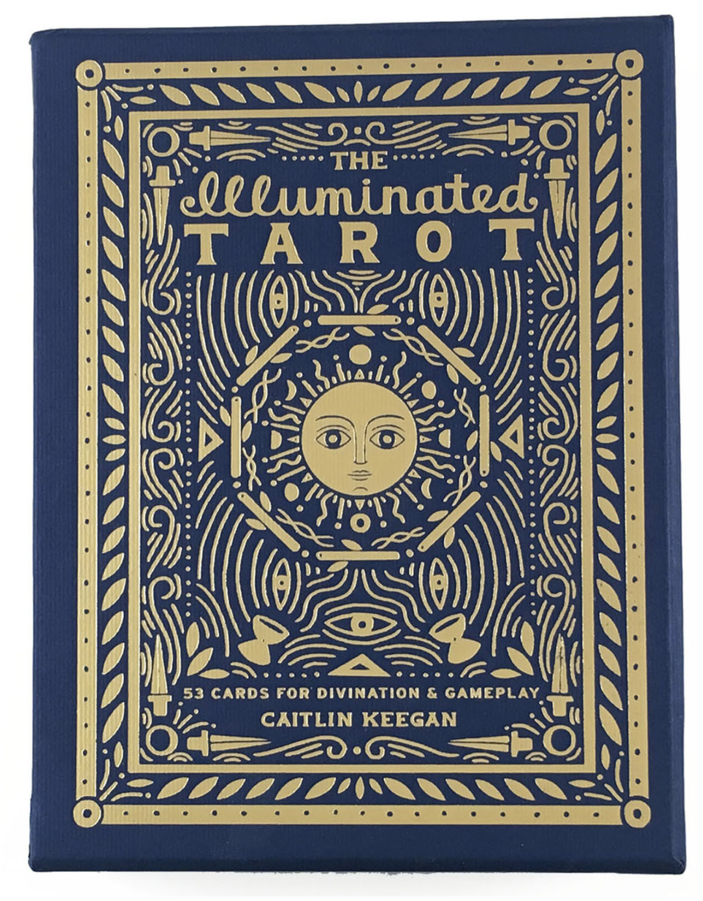
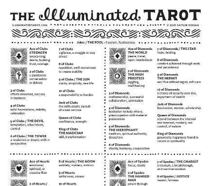
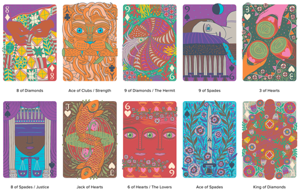
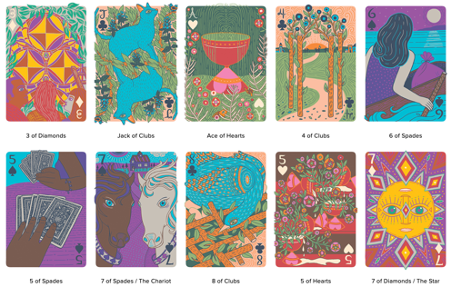
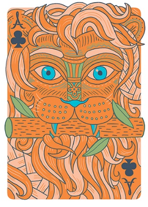

We are unable to experience all kinds of exhibitions due to the global outbreak of the COVID-19, but online exhibitions offer us the chance to enjoy different artworks by simply using our laptop or mobile devices. Although online exhibitions have some limitations, they provide many advantages that offline exhibitions don’t have. When you are visiting an online exhibition, you don’t need to worry about the time limit or geographical restrictions. Recently I had the honour to visit Caitlin Keegan’s online exhibition on her personal website under the guidance of my teacher Nigel. I was greatly attracted by her painting style.
Caitlin Keegan is an illustrator and a graphic designer. She is a great fan of the tarot deck and developed a strong interest in mythology, religion, symbols and archetypes. The Illuminated Tarot was published on April 25, 2017. As Caitlin herself explained, The Illuminated Tarot directly grew from her interest in learning about tarot symbolism and archetypes. She created a new version of the tarot deck that includes 53 cards both for gameplay and tarot readings. Caitlin believes that tarot can depict universal characteristics of human experience and each tarot she creates conveys a certain message or topic about human life. For each tarot, she provides short card descriptions and an introduction about the meaning of the card. Though she provides some guidance for the audience/players of her tarot deck, she strengthens that there’s great room for interpretations of the myths contained in each card.

There are two major points of criticism on The Illuminated Tarot. Firstly, some audience finds her use of colour is strange if not ugly. Secondly, some argue that though with the description provided by Caitlin, it’s still very hard to understand the tarot she creates. I’m on the opposite side of these two arguments. I think her painting style helps her deliver the messages and lead the audience to find out their own answers. Caitlin likes using bright colour in her paintings and it’s obvious to see that she tries to deliver the message in her works through strong colour contrast. With a bold approach to using relatively big colour blocks, her works are often visually striking. Her use of lines is also unique. Her paintings often have a lot of lines that are entangled with many others and it looks like she’s trying to build a lot of mazes and waiting for the audience to find out the exit, or the answer in her mysterious works.




Let’s take the card Ace of Clubs as an example. This card depicts a lion directly staring to the audience or possibly its prey. It’s interesting to see his eyes, nose and teeth are highlighted in blue which is greatly contrary to the foundation colour of the whole card yellow. The colour blue is normally the representation of peace and the repression of certain acts. Eyes, nose and teeth happen to be the most important organs for lions to find and consume preys. By using blue to highlight these three parts, the card shows that the lion is in the process of overcoming its desire and trying to build trust with the creature it’s facing to. The branch in its mouth also demonstrates the imposing of certain restrain on the lion’s predator instinct. Green leaves are also conveying the message of peace. Lines in this card are created to represent the lion’s hair. The lines are soft and of low density which restates the lion is not in an attacking position. In Caitlin’s guidebook, she explains that she wants to express the feeling of “overcoming desire, building trust, courage”. I think she successfully reaches her intention by her use of colour and lines.
Caitlin’s artworks are filled with myths and worth more exploration and interpretation. She greatly combines the fun part of the tarot deck and art. She successfully creates an innovative way for the audience/players to understand the physical and spiritual world of human life deeply.